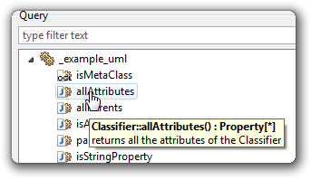
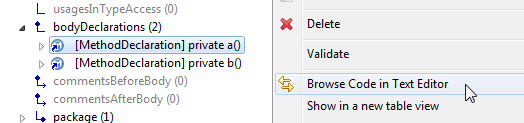
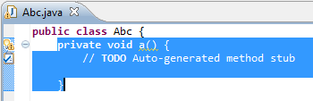

| new_and_noteworthy | ||
|---|---|---|
| Next | ||
| 0.8 | ||
The discoverer framework has been refactored to satisfy new requirements, including major simplifications for adopters and developers: discoverers are now easier to define and call programmatically.
All existing discoverer implementations have been migrated to this new framework, and old discoverer implementations have been deprecated.
Please consult the related documentation for more details on new features.
The browser now does more operations in the background, so that you can continue to interact with the UI while it is loading model elements or computing queries, customizations or facets

The workflow component was simplified by removing cruft.
The discoverer framework has been refactored to satisfy new requirements, including some simplification for adopters and developers. Existing discoverer implementations have be migrated to this new framework. Old discoverer implementations have been deprecated.
Some unnecessary limitations have been removed for calling the java discoverer from Java. It is now possible to specify a set of IJavaProject instances as input, whatever the dependencies between these java projects.
org.eclipse.gmt.modisco.java.generation.files.GenerateJavaExtended becomes the main public API. So Generate_JavaStructures is deprecated.
An additional discoverer parameter allows to indicate some path to a custom .asm file to use while transforming Java models to KDM models.
Discovery filters are improved using regular expressions for types and packages to exclude/include.

The corresponding code is then highlighted in a source editor:

| Next | ||
| 0.8 |